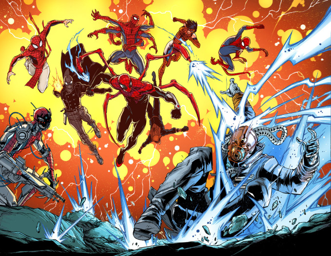
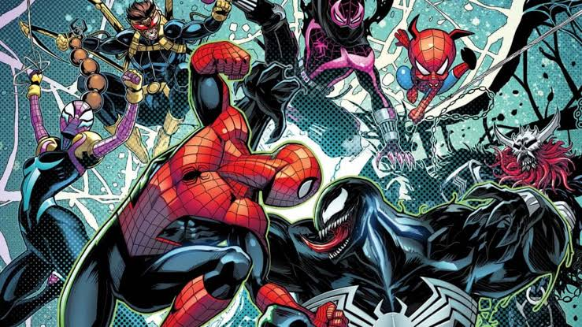
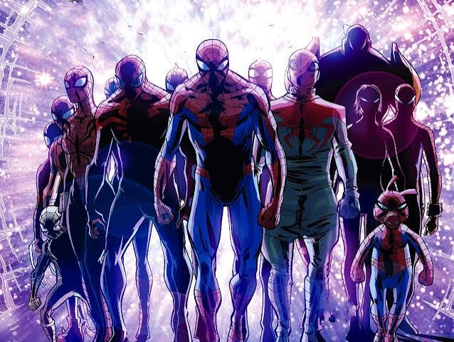
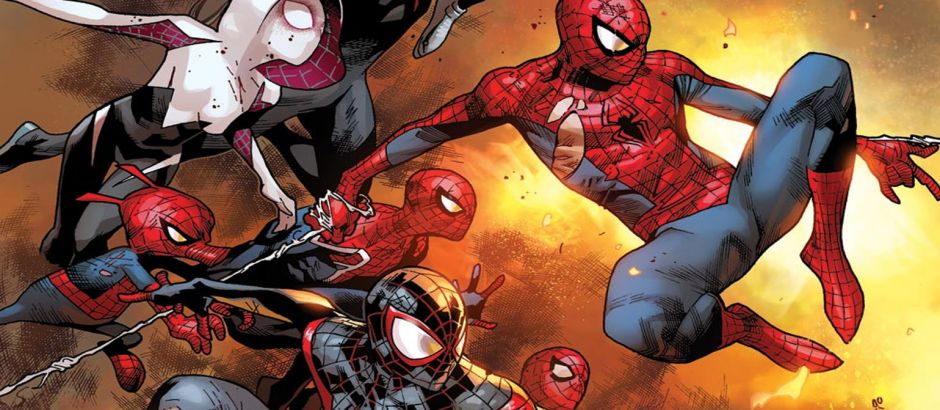

Dan Slott es un guionista estadounidense aclamado por su extensa etapa en The Amazing Spider-Man y por ser el creador principal del evento Spider-Verse en 2014.
Olivier Coipel (francés) y Giuseppe Camuncoli (italiano) son los artistas principales encargados del arte épico y el diseño visual de las distintas arañas del multiverso.
El evento principal se publicó entre noviembre de 2014 y febrero de 2015 en Marvel Comics, extendiéndose luego en múltiples secuelas y spin-offs (Spider-Geddon, End of the Spider-Verse).
Los Herederos, una familia de vampiros multiversales liderada por Morlun, comienzan a cazar a todas las versiones de Spider-Man a través del multiverso para absorber su energía vital. Ante la amenaza de extinción total, los Spider-Heroes de todas las dimensiones deben unirse para sobrevivir y contraatacar.